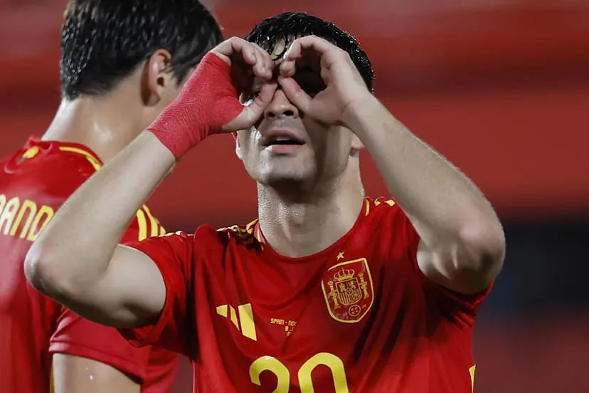

Selección española
Pedri confirma su vuelta con sus primeros goles con la selección
Un derechazo desde fuera del área dispara la confianza del canario,
que repite luego como llegador.

Las dudas sobre Pedri desaparecen. ¿Cómo está Pedri?,era la gran pregunta
en el entorno de la selección desde que arrancó el trabajo para la Eurocopa.
Leer noticia
Selección Nacional de México
Vinicius Jr portó la camiseta de México
¿Con quién la intercambió?
La estrella del Real Madrid se llevó los reflectores,
tuvo una asistencia para el de la victoria carioca
Al finalizar el juego, los futbolistas de ambas selecciones se saludaron
y algunos de ellos hicieron intercambio de camisetas.
Leer noticia
Liga MX Femenil
Tatiana Flores emite cominucado sobre las notas
falsas que han circulado en los últimos días: "Ya basta"
La delantera de la Selección Mexicana Femenil juvenil reclama por los
rumores que la señalan en el despido de Siboldi de Tigres.
Después de la salida de Robert Dante Siboldi de la dirección técnica
de Tigres, comenzaron rumores que lo vinculaban con Tatiana Flores,
juvenil delantera de Tigres Femenil y de la Selección Mexicana Femenil
Leer noticia